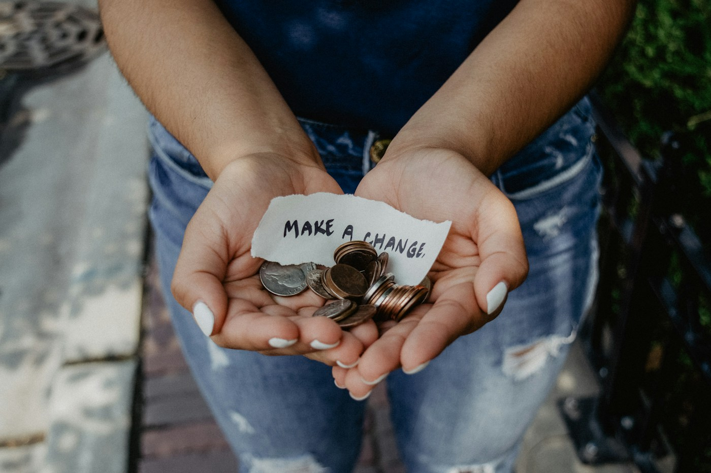
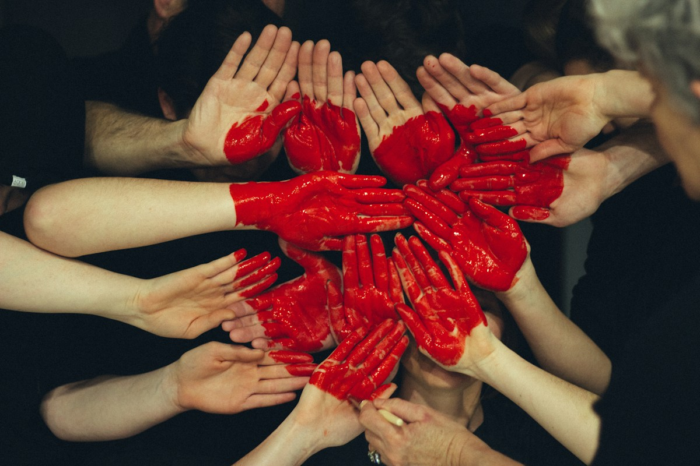
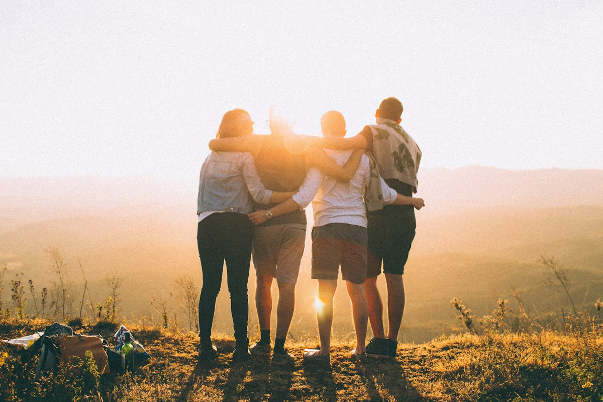

01 — Conhecer
Encontre uma forma de ajudar.
Comunidade que cultiva futuros
A Raízes une pessoas, organizações e vizinhos para criar oportunidades reais, fortalecer vínculos e tornar cada bairro mais saudável e acolhedor.

Trabalhamos em quatro frentes que nascem das demandas reais do território.
A experiência de participar
Explore as iniciativas, entenda cada papel e escolha a forma de apoiar com liberdade.
O cadastro conecta você à equipe, que identifica oportunidades alinhadas à sua disponibilidade.
Participe de oficinas, ações locais e novas conexões que realmente fazem diferença.


Quem somos
A ONG Raízes é um espaço de escuta, colaboração e ação. Nossa missão é ajudar pessoas e territórios a desenvolverem soluções que fortaleçam dignidade, pertencimento e oportunidades.
Nosso trabalho começa com conversas, encontros e reconhecimento das necessidades locais. Depois, conectamos moradores, parceiros e recursos para transformar ideias em ações concretas.
Entenda como trabalhamosEscuta o que a comunidade precisa.
02Conecta pessoas, saberes e oportunidades.
03Transforma cada encontro em uma ação sustentável.
Resultado em movimento
Por ações educativas, alimentares e de cuidado com espaços públicos.
Que oferecem tempo, conhecimento e presença em projetos da comunidade.
Com escolas, cozinhas e organizações que ampliam cada iniciativa.
Como trabalhamos
Entendemos as necessidades reais do território.
Articulamos ideias e recursos com parceiros locais.
Transformamos a proposta em experiências compartilhadas.
Uma conversa pode ser o começo